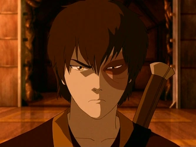
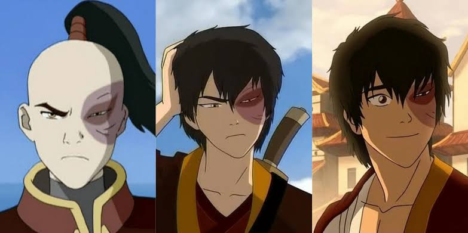
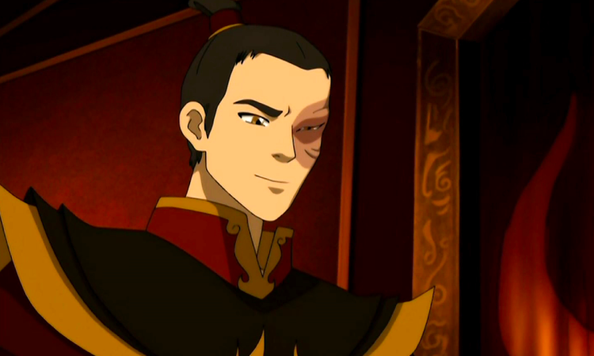

Nacionalidade: Nação do Fogo
Idade:
16 anos durante Avatar: A Lenda de Aang
17-18 durante a trilogia A Promessa
18-19 durante as trilogias A Busca e A Fenda
87 durante o Livro Um: Ar
87-88 durante o Livro Dois: Espíritos
91 durante o Livro Quatro: Equilíbrio
Gênero: Masculino
Cor dos olhos: Dourado (Âmbar)
Cor do cabelo: Preto / Castanho-escuro (Branco na velhice)
Obsessão pela Honra e Redenção: Busca recuperar sua honra e a aprovação do pai, vivendo um intenso conflito interno.
Impulsividade e Pavio Curto: É impulsivo e age pela emoção, amadurecendo ao longo da história.
Conflito de Identidade (Dualidade): Zuko vive dividido entre o legado cruel de seu pai (Senhor do Fogo Ozai) e a sabedoria e bondade de seu tio Iroh e sua mãe Ursa.
Trauma e Cicatriz: A queimadura em seu olho esquerdo é o símbolo físico e psicológico de sua rejeição e do abuso paterno. Grande parte de sua força vem da superação dessa dor.

O Príncipe Banido do Fogo
Zuko nasceu na Família Real da Nação do Fogo como filho de Ozai e Ursa. Sempre comparado à irmã Azula, cresceu tentando provar seu valor. Aos treze anos, recusou-se a enfrentar o pai em um Agni Kai, foi queimado no rosto e banido. Ao lado de seu tio Iroh, percorreu o mundo em busca do Avatar, acreditando que essa missão lhe devolveria a honra perdida.
Da Redenção ao Trono
Durante sua jornada, Zuko descobriu que a verdadeira honra não dependia da aprovação de Ozai, mas de suas próprias escolhas. Descendente do Avatar Roku por parte de mãe, rompeu com o legado de violência da Nação do Fogo, tornou-se mestre da antiga dobra dos Dragões, aliou-se ao Avatar Aang e, após a Guerra dos Cem Anos, foi coroado Senhor do Fogo, liderando a reconstrução do mundo com sabedoria e diplomacia.

Ao longo de sua jornada, Zuko evoluiu de um dobrador de fogo instável e impulsivo para um dos mestres mais habilidosos da Nação do Fogo, alcançando níveis raramente vistos fora da realeza e dos lendários mestres antigos.
Dobra de Fogo Avançada: Zuko desenvolveu controle refinado sobre chamas intensas, deixando de depender apenas da agressividade e passando a usar precisão, técnica e disciplina em combate.
Redirecionamento de Raios: Após treinamento com seu tio Iroh, Zuko dominou a técnica de redirecionar relâmpagos, uma habilidade extremamente rara entre dobradores de fogo, exigindo controle absoluto do fluxo de energia interna.
Técnica dos Dragões: Zuko aprendeu com os últimos dragões vivos a forma original da dobra de fogo, baseada em respiração e equilíbrio, o que elevou seu poder para um nível muito mais puro e estável.
Liderança como Senhor do Fogo: Após o fim da Guerra dos Cem Anos, Zuko assumiu o trono e usou seu poder político para desmontar o imperialismo da Nação do Fogo, transformando-a em uma nação de paz e reconstrução.
Consumido pela busca de honra, Zuko passa anos perseguindo o Avatar Aang acreditando que essa é sua única chance de voltar para casa. Aos poucos, graças aos ensinamentos de Iroh e às próprias experiências, percebe que sua verdadeira missão é romper com o legado de violência de Ozai. Ao unir-se ao Avatar, torna-se seu mestre de dobra de fogo e ajuda a encerrar a Guerra dos Cem Anos. Coroado Senhor do Fogo, dedica sua vida à paz e à reconstrução do mundo, tornando-se um símbolo de coragem, amadurecimento e redenção.
Ir para página do Ozai
Ir para página da Azula
Ir para página Principal